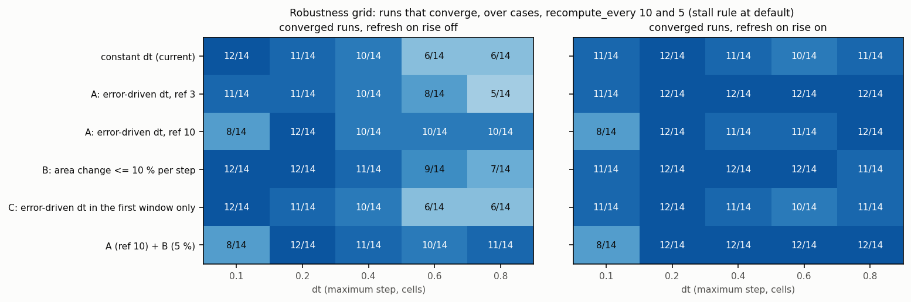
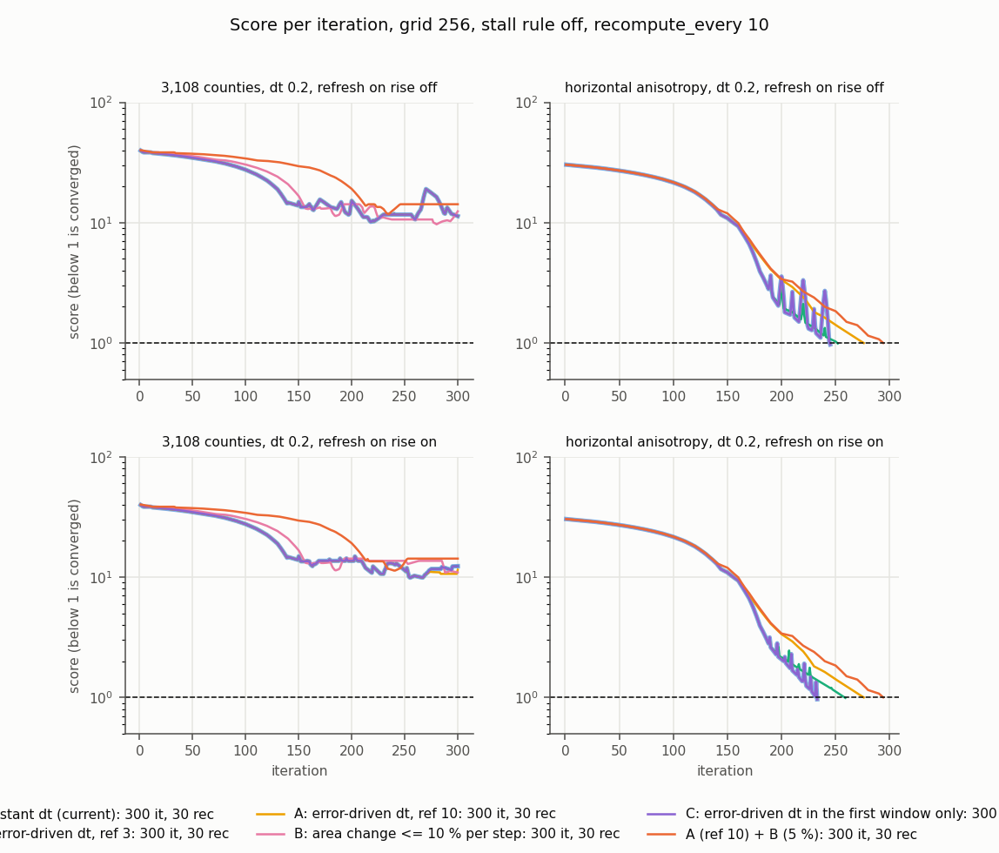
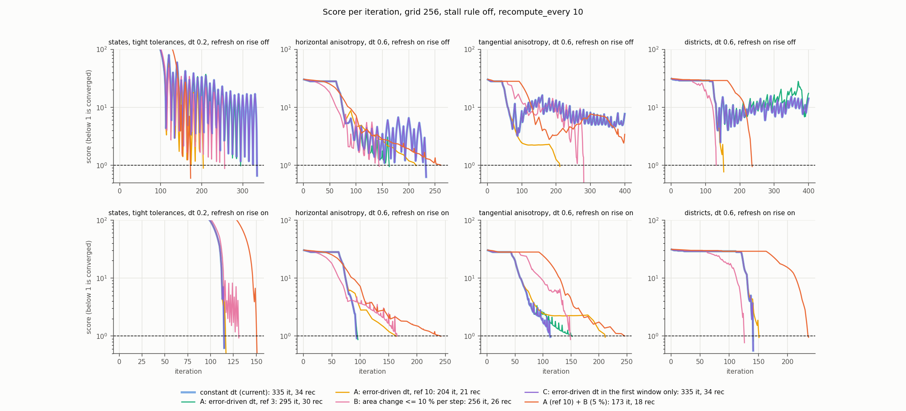

Does an error-driven or area-change-limited step improve accuracy, cost and stability of the flow cartogram, and how does it interact with refresh-on-rise and the stall rule? Modestly: it removes most late oscillations and makes restarts safe, but refresh-on-rise already captures most of the robustness gain and the controllers cost 0 to 60 % more iterations.
An investigation, not a change. The prototype adds four MorphOptions fields (defaults reproduce the current behavior; with them unset the results match the base commit to about 1e-13, the known numba noise): step_score_ref, step_dt_min, step_restart_only, step_max_area_change. Scripts are in scripts/; raw results are in data/*.jsonl|json; every table is regenerated by scripts/all_tables.py into data/tables.md (run with the worktree interpreter of f9e3556).
The step normalization is unchanged: the fastest grid velocity moves dt_eff cells per iteration.
dt_eff = dt * clip(score / ref, dt_min / dt, 1), with the combined score max(mean_log/log2(1+mean_tol), max_log/log2(1+max_tol)) of the current state (for the first iteration, of the input geometries). Swept: ref 3, 10, 30 with dt_min 0.05 (0.1 in the first sweep).f (relative to max(area, one cell)), the step is redone from the previous coordinates, scaled by f / largest change. Swept: 2, 5, 10, 20 %. Costs one extra displacement plus area evaluation per limited step ("redo steps").max(recompute_every, 10) iterations; identical to constant dt whenever the run starts from a large error.Finding about issue point 2: vmax_scale cancels in dt_prime (the step is divided by the maximum of the already scaled field), so keeping vmax_initial would change nothing. The first step after a restart is large because the step always moves the fastest point dt cells, whatever the error.
recompute_every 10. "max rise factor": largest iteration-to-iteration score ratio once the score is below 20; "final/best score": last iterate against the best one (large values are the issue's late spike; the stall rule returns the best iterate).
| case | dt | refresh on rise | controller | status | it | rec | rises (score<20) | max rise factor | final/best score | max err % (output) | cost |
|---|---|---|---|---|---|---|---|---|---|---|---|
| states_t | 0.2 | off | constant dt | stalled | 200 | 20 | 28 | 2.79 | 15.7 | 2.1 | 440 |
| states_t | 0.2 | off | A ref 3 | stalled | 200 | 20 | 29 | 3.26 | 13.4 | 2.2 | 440 |
| states_t | 0.2 | off | A ref 10 | converged | 204 | 21 | 46 | 2.17 | 1.0 | 0.9 | 456 |
| states_t | 0.2 | off | A ref 30 | converged | 135 | 14 | 9 | 2.78 | 1.0 | 0.6 | 303 |
| states_t | 0.2 | off | B 5 % | stalled | 220 | 22 | 32 | 5.08 | 18.5 | 1.1 | 484 |
| states_t | 0.2 | off | B 10 % | converged | 256 | 26 | 61 | 3.94 | 1.0 | 0.9 | 568 |
| states_t | 0.2 | off | C ref 10 | stalled | 200 | 20 | 28 | 2.79 | 15.7 | 2.1 | 440 |
| states_t | 0.2 | off | A ref 10 + B 5 % | converged | 173 | 18 | 12 | 2.11 | 1.0 | 0.6 | 389 |
| states_t | 0.2 | on | constant dt | converged | 115 | 13 | 1 | 1.63 | 1.0 | 0.6 | 271 |
| states_t | 0.2 | on | A ref 3 | converged | 115 | 13 | 1 | 1.63 | 1.0 | 0.6 | 271 |
| states_t | 0.2 | on | A ref 10 | converged | 117 | 13 | 1 | 1.55 | 1.0 | 0.5 | 273 |
| states_t | 0.2 | on | A ref 30 | converged | 119 | 13 | 1 | 1.57 | 1.0 | 0.5 | 275 |
| states_t | 0.2 | on | B 5 % | converged | 157 | 19 | 4 | 5.34 | 1.0 | 0.9 | 385 |
| states_t | 0.2 | on | B 10 % | converged | 131 | 20 | 8 | 6.06 | 1.0 | 0.9 | 371 |
| states_t | 0.2 | on | C ref 10 | converged | 115 | 13 | 1 | 1.63 | 1.0 | 0.6 | 271 |
| states_t | 0.2 | on | A ref 10 + B 5 % | converged | 151 | 16 | 1 | 1.71 | 1.0 | 0.5 | 343 |
| horiz | 0.6 | off | constant dt | stalled | 200 | 20 | 66 | 1.61 | 6.0 | 9.9 | 440 |
| horiz | 0.6 | off | A ref 3 | converged | 163 | 17 | 40 | 1.35 | 1.0 | 8.7 | 367 |
| horiz | 0.6 | off | A ref 10 | converged | 214 | 22 | 20 | 1.04 | 1.0 | 9.0 | 478 |
| horiz | 0.6 | off | A ref 30 | converged | 186 | 19 | 10 | 1.01 | 1.0 | 8.9 | 414 |
| horiz | 0.6 | off | B 5 % | converged | 247 | 25 | 56 | 1.30 | 1.0 | 9.0 | 547 |
| horiz | 0.6 | off | B 10 % | converged | 144 | 15 | 29 | 1.70 | 1.0 | 8.7 | 324 |
| horiz | 0.6 | off | C ref 10 | stalled | 200 | 20 | 66 | 1.61 | 6.0 | 9.9 | 440 |
| horiz | 0.6 | off | A ref 10 + B 5 % | converged | 261 | 27 | 26 | 1.17 | 1.0 | 9.1 | 585 |
| horiz | 0.6 | on | constant dt | converged | 94 | 11 | 1 | 1.01 | 1.0 | 8.7 | 226 |
| horiz | 0.6 | on | A ref 3 | converged | 96 | 11 | 1 | 1.01 | 1.0 | 8.3 | 228 |
| horiz | 0.6 | on | A ref 10 | converged | 163 | 18 | 6 | 1.04 | 1.0 | 9.0 | 379 |
| horiz | 0.6 | on | A ref 30 | converged | 196 | 22 | 12 | 1.01 | 1.0 | 9.0 | 460 |
| horiz | 0.6 | on | B 5 % | converged | 196 | 26 | 25 | 1.42 | 1.0 | 8.8 | 508 |
| horiz | 0.6 | on | B 10 % | converged | 165 | 24 | 23 | 1.83 | 1.0 | 9.1 | 453 |
| horiz | 0.6 | on | C ref 10 | converged | 94 | 11 | 1 | 1.01 | 1.0 | 8.7 | 226 |
| horiz | 0.6 | on | A ref 10 + B 5 % | converged | 242 | 28 | 34 | 1.18 | 1.0 | 9.0 | 578 |
| tang | 0.6 | off | constant dt | stalled | 130 | 13 | 40 | 1.27 | 4.0 | 29.7 | 286 |
| tang | 0.6 | off | A ref 3 | stalled | 130 | 13 | 40 | 1.27 | 4.0 | 29.7 | 286 |
| tang | 0.6 | off | A ref 10 | stalled | 160 | 16 | 29 | 1.00 | 1.0 | 19.7 | 352 |
| tang | 0.6 | off | A ref 30 | stalled | 150 | 15 | 37 | 1.08 | 1.8 | 70.8 | 330 |
| tang | 0.6 | off | B 5 % | converged | 256 | 26 | 54 | 1.39 | 1.0 | 9.0 | 568 |
| tang | 0.6 | off | B 10 % | stalled | 160 | 16 | 38 | 1.13 | 1.4 | 49.6 | 352 |
| tang | 0.6 | off | C ref 10 | stalled | 130 | 13 | 40 | 1.27 | 4.0 | 29.7 | 286 |
| tang | 0.6 | off | A ref 10 + B 5 % | stalled | 220 | 22 | 49 | 1.03 | 1.6 | 24.0 | 484 |
| tang | 0.6 | on | constant dt | converged | 113 | 18 | 10 | 1.61 | 1.0 | 9.1 | 329 |
| tang | 0.6 | on | A ref 3 | converged | 152 | 26 | 19 | 1.41 | 1.0 | 9.0 | 464 |
| tang | 0.6 | on | A ref 10 | stalled | 160 | 16 | 29 | 1.00 | 1.0 | 19.7 | 352 |
| tang | 0.6 | on | A ref 30 | stalled | 370 | 38 | 30 | 1.01 | 1.0 | 35.9 | 826 |
| tang | 0.6 | on | B 5 % | converged | 160 | 20 | 5 | 1.09 | 1.0 | 9.5 | 400 |
| tang | 0.6 | on | B 10 % | converged | 149 | 24 | 16 | 1.72 | 1.0 | 8.0 | 437 |
| tang | 0.6 | on | C ref 10 | converged | 113 | 18 | 10 | 1.61 | 1.0 | 9.1 | 329 |
| tang | 0.6 | on | A ref 10 + B 5 % | converged | 246 | 28 | 34 | 1.03 | 1.0 | 9.1 | 582 |
| tilt | 0.6 | off | constant dt | stalled | 220 | 22 | 84 | 1.52 | 4.7 | 9.3 | 484 |
| tilt | 0.6 | off | A ref 3 | converged | 165 | 17 | 51 | 1.52 | 1.0 | 8.1 | 369 |
| tilt | 0.6 | off | A ref 10 | converged | 183 | 19 | 17 | 1.24 | 1.0 | 9.0 | 411 |
| tilt | 0.6 | off | A ref 30 | converged | 165 | 17 | 0 | 0.99 | 1.0 | 8.4 | 369 |
| tilt | 0.6 | off | B 5 % | converged | 144 | 15 | 0 | 0.97 | 1.0 | 6.7 | 324 |
| tilt | 0.6 | off | B 10 % | stalled | 120 | 12 | 26 | 1.36 | 2.8 | 28.7 | 264 |
| tilt | 0.6 | off | C ref 10 | stalled | 220 | 22 | 84 | 1.52 | 4.7 | 9.3 | 484 |
| tilt | 0.6 | off | A ref 10 + B 5 % | converged | 149 | 15 | 0 | 0.97 | 1.0 | 8.8 | 329 |
| tilt | 0.6 | on | constant dt | converged | 104 | 19 | 13 | 2.03 | 1.0 | 8.5 | 332 |
| tilt | 0.6 | on | A ref 3 | converged | 109 | 19 | 13 | 1.60 | 1.0 | 9.0 | 337 |
| tilt | 0.6 | on | A ref 10 | converged | 181 | 19 | 9 | 1.24 | 1.0 | 9.1 | 409 |
| tilt | 0.6 | on | A ref 30 | converged | 165 | 17 | 0 | 0.99 | 1.0 | 8.4 | 369 |
| tilt | 0.6 | on | B 5 % | converged | 144 | 15 | 0 | 0.97 | 1.0 | 6.7 | 324 |
| tilt | 0.6 | on | B 10 % | converged | 94 | 13 | 5 | 1.57 | 1.0 | 8.7 | 250 |
| tilt | 0.6 | on | C ref 10 | converged | 104 | 19 | 13 | 2.03 | 1.0 | 8.5 | 332 |
| tilt | 0.6 | on | A ref 10 + B 5 % | converged | 149 | 15 | 0 | 0.97 | 1.0 | 8.8 | 329 |
| districts | 0.6 | off | constant dt | stalled | 190 | 19 | 32 | 2.01 | 3.6 | 26.4 | 587 |
| districts | 0.6 | off | A ref 3 | stalled | 190 | 19 | 32 | 1.84 | 3.9 | 26.4 | 587 |
| districts | 0.6 | off | A ref 10 | converged | 153 | 16 | 2 | 1.23 | 1.0 | 7.6 | 487 |
| districts | 0.6 | off | A ref 30 | stalled | 120 | 12 | 0 | 1.00 | 1.0 | 1198.1 | 371 |
| districts | 0.6 | off | B 5 % | converged | 255 | 26 | 9 | 1.44 | 1.0 | 7.8 | 798 |
| districts | 0.6 | off | B 10 % | converged | 131 | 14 | 6 | 1.04 | 1.0 | 10.0 | 424 |
| districts | 0.6 | off | C ref 10 | stalled | 190 | 19 | 32 | 2.01 | 3.6 | 26.4 | 587 |
| districts | 0.6 | off | A ref 10 + B 5 % | converged | 236 | 24 | 0 | 0.99 | 1.0 | 8.7 | 738 |
| districts | 0.6 | on | constant dt | converged | 141 | 16 | 2 | 1.92 | 1.0 | 5.2 | 475 |
| districts | 0.6 | on | A ref 3 | converged | 141 | 16 | 2 | 1.33 | 1.0 | 7.5 | 475 |
| districts | 0.6 | on | A ref 10 | converged | 151 | 16 | 1 | 1.23 | 1.0 | 9.4 | 485 |
| districts | 0.6 | on | A ref 30 | stalled | 120 | 12 | 0 | 1.00 | 1.0 | 1198.1 | 371 |
| districts | 0.6 | on | B 5 % | converged | 237 | 25 | 1 | 1.09 | 1.0 | 5.4 | 760 |
| districts | 0.6 | on | B 10 % | converged | 126 | 17 | 6 | 1.18 | 1.0 | 7.0 | 481 |
| districts | 0.6 | on | C ref 10 | converged | 141 | 16 | 2 | 1.92 | 1.0 | 5.2 | 475 |
| districts | 0.6 | on | A ref 10 + B 5 % | converged | 236 | 24 | 0 | 0.99 | 1.0 | 8.7 | 738 |
From the output geometries (the returned best iterate): linear relative error of area shares against target shares, independent of the library. dt 0.2, recompute_every 10, refresh-on-rise on. The library and output columns agree within 1 point except on counties, where the library floors errors at one cell (58 % mean error in the output against 4.5 % in the library). A dt-0.6 version is in data/tables.md.
| case | controller | status | it | library mean / max % | output mean / max % | share above 10 % | best score |
|---|---|---|---|---|---|---|---|
| states | constant dt | converged | 113 | 0.32 / 4.4 | 0.31 / 4.4 | 0.0 | 0.45 |
| states | A ref 3 | converged | 114 | 0.38 / 6.6 | 0.38 / 6.6 | 0.0 | 0.67 |
| states | A ref 10 | converged | 124 | 0.53 / 7.7 | 0.55 / 7.7 | 0.0 | 0.78 |
| states | B 10 % | converged | 115 | 0.57 / 4.1 | 0.56 / 3.9 | 0.0 | 0.42 |
| states | A ref 10 + B 5 % | converged | 154 | 0.54 / 7.6 | 0.55 / 7.6 | 0.0 | 0.77 |
| states_t | constant dt | converged | 115 | 0.07 / 0.6 | 0.07 / 0.6 | 0.0 | 0.62 |
| states_t | A ref 3 | converged | 115 | 0.07 / 0.6 | 0.07 / 0.6 | 0.0 | 0.62 |
| states_t | A ref 10 | converged | 117 | 0.05 / 0.5 | 0.05 / 0.5 | 0.0 | 0.47 |
| states_t | B 10 % | converged | 131 | 0.20 / 0.9 | 0.20 / 0.9 | 0.0 | 0.93 |
| states_t | A ref 10 + B 5 % | converged | 151 | 0.07 / 0.5 | 0.07 / 0.5 | 0.0 | 0.45 |
| districts | constant dt | converged | 150 | 1.07 / 8.0 | 1.07 / 8.0 | 0.0 | 0.81 |
| districts | A ref 3 | converged | 152 | 1.22 / 9.4 | 1.22 / 9.4 | 0.0 | 0.94 |
| districts | A ref 10 | converged | 163 | 0.46 / 8.5 | 0.47 / 8.5 | 0.0 | 0.86 |
| districts | B 10 % | converged | 165 | 0.85 / 7.5 | 0.84 / 7.5 | 0.0 | 0.76 |
| districts | A ref 10 + B 5 % | converged | 221 | 0.84 / 9.6 | 0.83 / 9.5 | 0.0 | 0.96 |
| horiz | constant dt | converged | 233 | 1.30 / 9.6 | 1.30 / 8.8 | 0.0 | 0.96 |
| horiz | A ref 3 | converged | 259 | 0.72 / 9.9 | 0.72 / 9.0 | 0.0 | 0.99 |
| horiz | A ref 10 | converged | 276 | 0.34 / 10.0 | 0.34 / 9.1 | 0.0 | 1.00 |
| horiz | B 10 % | converged | 233 | 1.30 / 9.6 | 1.30 / 8.8 | 0.0 | 0.96 |
| horiz | A ref 10 + B 5 % | converged | 294 | 0.33 / 10.0 | 0.32 / 9.1 | 0.0 | 1.00 |
| tang | constant dt | converged | 216 | 1.99 / 8.6 | 1.72 / 8.7 | 0.0 | 0.86 |
| tang | A ref 3 | converged | 222 | 1.61 / 10.0 | 1.59 / 9.2 | 0.0 | 1.00 |
| tang | A ref 10 | converged | 236 | 2.09 / 9.9 | 2.01 / 8.6 | 0.0 | 0.99 |
| tang | B 10 % | converged | 208 | 1.50 / 8.8 | 1.54 / 8.0 | 0.0 | 0.88 |
| tang | A ref 10 + B 5 % | converged | 265 | 1.54 / 9.8 | 1.31 / 8.6 | 0.0 | 0.98 |
| tilt | constant dt | converged | 169 | 1.10 / 9.5 | 1.09 / 8.8 | 0.0 | 0.95 |
| tilt | A ref 3 | converged | 178 | 0.96 / 9.9 | 0.94 / 9.1 | 0.0 | 0.99 |
| tilt | A ref 10 | converged | 202 | 0.43 / 9.2 | 0.43 / 8.4 | 0.0 | 0.92 |
| tilt | B 10 % | converged | 169 | 1.16 / 9.1 | 1.12 / 8.5 | 0.0 | 0.91 |
| tilt | A ref 10 + B 5 % | converged | 205 | 0.44 / 9.3 | 0.44 / 8.5 | 0.0 | 0.93 |
| counties | constant dt | stalled | 300 | 4.47 / 156.2 | 58.46 / 2117.7 | 69.4 | 9.87 |
| counties | A ref 3 | stalled | 300 | 4.47 / 156.2 | 58.46 / 2117.7 | 69.4 | 9.87 |
| counties | A ref 10 | stalled | 300 | 4.47 / 156.2 | 58.46 / 2117.7 | 69.4 | 9.87 |
| counties | B 10 % | stalled | 250 | 6.01 / 195.5 | 59.64 / 2724.3 | 73.3 | 11.37 |
| counties | A ref 10 + B 5 % | completed | 300 | 6.81 / 194.0 | 74.41 / 5266.5 | 76.0 | 11.31 |
dt in {0.1, 0.2, 0.4, 0.6, 0.8} x recompute_every in {10, 5} x refresh-on-rise {off, on} on states, tight states, districts, three anisotropy runs (cheap set, 30 runs per row) at grid 256, stall rule at default. No run diverged (final score above the first score). Iteration and cost ratios are medians over runs where the controller and constant dt both converged. "mean rises" counts iterations where the score rises once below 20, averaged over runs (partly a function of run length).
| controller | refresh on rise | recompute_every | runs | converged | stalled | diverged | incomplete | median it (conv) | it ratio to constant dt (both conv) | cost ratio (both conv) | mean rises below score 20 |
|---|---|---|---|---|---|---|---|---|---|---|---|
| constant dt | off | 10 | 30 | 17 | 13 | 0 | 0 | 216 | 1.00 | 1.00 | 27.4 |
| constant dt | off | 5 | 30 | 28 | 2 | 0 | 0 | 116 | 1.00 | 1.00 | 10.3 |
| constant dt | on | 10 | 30 | 27 | 2 | 0 | 1 | 123 | 1.00 | 1.00 | 9.0 |
| constant dt | on | 5 | 30 | 28 | 2 | 0 | 0 | 96 | 1.00 | 1.00 | 7.0 |
| A ref 3 | off | 10 | 30 | 18 | 11 | 0 | 1 | 188 | 1.01 | 1.00 | 22.3 |
| A ref 3 | off | 5 | 30 | 27 | 3 | 0 | 0 | 109 | 1.00 | 1.00 | 9.1 |
| A ref 3 | on | 10 | 30 | 29 | 0 | 0 | 1 | 131 | 1.02 | 1.01 | 7.8 |
| A ref 3 | on | 5 | 30 | 30 | 0 | 0 | 0 | 100 | 1.02 | 1.00 | 3.1 |
| A ref 10 | off | 10 | 30 | 22 | 6 | 0 | 2 | 177 | 1.07 | 1.07 | 12.0 |
| A ref 10 | off | 5 | 30 | 28 | 0 | 0 | 2 | 110 | 1.08 | 1.06 | 2.8 |
| A ref 10 | on | 10 | 30 | 26 | 2 | 0 | 2 | 163 | 1.09 | 1.07 | 6.7 |
| A ref 10 | on | 5 | 30 | 28 | 0 | 0 | 2 | 107 | 1.13 | 1.07 | 1.4 |
| A ref 30 | off | 10 | 30 | 21 | 6 | 0 | 3 | 181 | 1.50 | 1.49 | 5.7 |
| A ref 30 | off | 5 | 30 | 27 | 0 | 0 | 3 | 167 | 1.60 | 1.58 | 2.2 |
| A ref 30 | on | 10 | 30 | 24 | 3 | 0 | 3 | 178 | 1.51 | 1.39 | 5.0 |
| A ref 30 | on | 5 | 30 | 27 | 0 | 0 | 3 | 167 | 1.70 | 1.59 | 1.9 |
| B 5 % | off | 10 | 30 | 25 | 5 | 0 | 0 | 216 | 1.06 | 1.06 | 14.1 |
| B 5 % | off | 5 | 30 | 29 | 1 | 0 | 0 | 152 | 1.19 | 1.18 | 2.0 |
| B 5 % | on | 10 | 30 | 29 | 0 | 0 | 1 | 176 | 1.40 | 1.22 | 4.5 |
| B 5 % | on | 5 | 30 | 30 | 0 | 0 | 0 | 150 | 1.36 | 1.32 | 1.0 |
| B 10 % | off | 10 | 30 | 22 | 8 | 0 | 0 | 168 | 1.00 | 1.00 | 18.1 |
| B 10 % | off | 5 | 30 | 29 | 1 | 0 | 0 | 118 | 1.00 | 1.00 | 5.0 |
| B 10 % | on | 10 | 30 | 28 | 1 | 0 | 1 | 128 | 1.01 | 1.00 | 5.2 |
| B 10 % | on | 5 | 30 | 30 | 0 | 0 | 0 | 108 | 1.09 | 1.05 | 2.6 |
| C ref 10 | off | 10 | 30 | 17 | 13 | 0 | 0 | 216 | 1.00 | 1.00 | 27.4 |
| C ref 10 | off | 5 | 30 | 28 | 2 | 0 | 0 | 116 | 1.00 | 1.00 | 10.3 |
| C ref 10 | on | 10 | 30 | 27 | 2 | 0 | 1 | 123 | 1.00 | 1.00 | 9.0 |
| C ref 10 | on | 5 | 30 | 28 | 2 | 0 | 0 | 96 | 1.00 | 1.00 | 7.0 |
| A ref 10 + B 5 % | off | 10 | 30 | 24 | 4 | 0 | 2 | 221 | 1.20 | 1.18 | 7.8 |
| A ref 10 + B 5 % | off | 5 | 30 | 28 | 0 | 0 | 2 | 148 | 1.35 | 1.35 | 0.8 |
| A ref 10 + B 5 % | on | 10 | 30 | 28 | 0 | 0 | 2 | 211 | 1.53 | 1.31 | 4.9 |
| A ref 10 + B 5 % | on | 5 | 30 | 28 | 0 | 0 | 2 | 149 | 1.59 | 1.50 | 0.3 |
Converged runs per dt (12 runs per cell):
| controller | refresh on rise | dt 0.1 | dt 0.2 | dt 0.4 | dt 0.6 | dt 0.8 |
|---|---|---|---|---|---|---|
| constant dt | off | 12/12 | 11/12 | 10/12 | 6/12 | 6/12 |
| A ref 3 | off | 11/12 | 11/12 | 10/12 | 8/12 | 5/12 |
| A ref 10 | off | 8/12 | 12/12 | 10/12 | 10/12 | 10/12 |
| A ref 30 | off | 6/12 | 12/12 | 11/12 | 9/12 | 10/12 |
| B 5 % | off | 12/12 | 11/12 | 10/12 | 10/12 | 11/12 |
| B 10 % | off | 12/12 | 12/12 | 11/12 | 9/12 | 7/12 |
| C ref 10 | off | 12/12 | 11/12 | 10/12 | 6/12 | 6/12 |
| A ref 10 + B 5 % | off | 8/12 | 12/12 | 11/12 | 10/12 | 11/12 |
| constant dt | on | 11/12 | 12/12 | 11/12 | 10/12 | 11/12 |
| A ref 3 | on | 11/12 | 12/12 | 12/12 | 12/12 | 12/12 |
| A ref 10 | on | 8/12 | 12/12 | 11/12 | 11/12 | 12/12 |
| A ref 30 | on | 6/12 | 12/12 | 11/12 | 10/12 | 12/12 |
| B 5 % | on | 11/12 | 12/12 | 12/12 | 12/12 | 12/12 |
| B 10 % | on | 11/12 | 12/12 | 12/12 | 12/12 | 11/12 |
| C ref 10 | on | 11/12 | 12/12 | 11/12 | 10/12 | 11/12 |
| A ref 10 + B 5 % | on | 8/12 | 12/12 | 12/12 | 12/12 | 12/12 |
Counties (10 runs per row, from data/grid_counties.jsonl; none converges, none changes the plateau):
| controller | refresh on rise | runs | conv | stall | div | incompl | median best score | median output mean err % | median cost |
|---|---|---|---|---|---|---|---|---|---|
| constant dt | off | 10 | 0 | 8 | 0 | 2 | 10.8 | 59 | 1680 |
| constant dt | on | 10 | 0 | 8 | 0 | 2 | 10.6 | 58 | 2091 |
| A ref 3 | off | 10 | 0 | 8 | 0 | 2 | 10.8 | 59 | 1680 |
| A ref 3 | on | 10 | 0 | 8 | 0 | 2 | 10.6 | 58 | 2091 |
| A ref 10 | off | 10 | 0 | 8 | 0 | 2 | 10.8 | 59 | 1680 |
| A ref 10 | on | 10 | 0 | 8 | 0 | 2 | 10.6 | 58 | 2091 |
| A ref 30 | off | 10 | 0 | 8 | 0 | 2 | 11.2 | 70 | 1564 |
| A ref 30 | on | 10 | 0 | 8 | 0 | 2 | 11.5 | 63 | 1824 |
| B 5 % | off | 10 | 0 | 1 | 0 | 9 | 11.7 | 85 | 2438 |
| B 5 % | on | 10 | 0 | 1 | 0 | 9 | 11.4 | 77 | 2675 |
| B 10 % | off | 10 | 0 | 7 | 0 | 3 | 11.5 | 61 | 1912 |
| B 10 % | on | 10 | 0 | 8 | 0 | 2 | 11.6 | 68 | 2021 |
| C ref 10 | off | 10 | 0 | 8 | 0 | 2 | 10.8 | 59 | 1680 |
| C ref 10 | on | 10 | 0 | 8 | 0 | 2 | 10.6 | 58 | 2091 |
| A ref 10 + B 5 % | off | 10 | 0 | 1 | 0 | 9 | 11.7 | 85 | 2438 |
| A ref 10 + B 5 % | on | 10 | 0 | 1 | 0 | 9 | 11.4 | 77 | 2675 |
Second run on the output of a first run, tight tolerances; states and districts at grid 256 and 512 (4 start geometries per row). conv: converged at the tight tolerances; loose: converged at 5 % / 20 % (first stage of a two-phase schedule); stall: best iterate of a dt-0.6 run without refresh-on-rise that did not converge. Per-run rows: data/restart.json.
| start | refresh on rise | controller | converged | median it | median cost | median score after it 1 | median max score in it 1-5 |
|---|---|---|---|---|---|---|---|
| conv | on | constant dt | 4/4 | 4 | 51 | 3.6 | 7.8 |
| conv | on | A ref 3 | 4/4 | 1 | 25 | 0.5 | 0.5 |
| conv | on | A ref 10 | 4/4 | 1 | 25 | 0.4 | 0.4 |
| conv | on | A ref 30 | 4/4 | 1 | 25 | 0.4 | 0.4 |
| conv | on | C ref 3 | 4/4 | 1 | 25 | 0.5 | 0.5 |
| conv | on | C ref 10 | 4/4 | 1 | 25 | 0.4 | 0.4 |
| conv | on | B 10 % | 4/4 | 4 | 51 | 3.6 | 7.8 |
| conv | on | A ref 10 + B 5 % | 4/4 | 1 | 25 | 0.4 | 0.4 |
| conv | off | constant dt | 3/4 | 52 | 159 | 3.6 | 20.1 |
| conv | off | A ref 3 | 3/4 | 1 | 25 | 0.5 | 0.5 |
| conv | off | A ref 10 | 4/4 | 1 | 25 | 0.4 | 0.4 |
| conv | off | A ref 30 | 4/4 | 1 | 25 | 0.4 | 0.4 |
| conv | off | C ref 3 | 3/4 | 1 | 25 | 0.5 | 0.5 |
| conv | off | C ref 10 | 3/4 | 1 | 25 | 0.4 | 0.4 |
| conv | off | B 10 % | 2/4 | 56 | 189 | 3.6 | 20.1 |
| conv | off | A ref 10 + B 5 % | 4/4 | 1 | 25 | 0.4 | 0.4 |
| loose | on | constant dt | 4/4 | 6 | 59 | 11.6 | 12.9 |
| loose | on | A ref 3 | 4/4 | 10 | 98 | 11.6 | 13.4 |
| loose | on | A ref 10 | 4/4 | 7 | 48 | 11.6 | 11.9 |
| loose | on | A ref 30 | 4/4 | 12 | 58 | 13.8 | 13.8 |
| loose | on | C ref 3 | 4/4 | 10 | 98 | 11.6 | 13.4 |
| loose | on | C ref 10 | 4/4 | 7 | 48 | 11.6 | 11.9 |
| loose | on | B 10 % | 4/4 | 9 | 80 | 11.6 | 12.3 |
| loose | on | A ref 10 + B 5 % | 4/4 | 6 | 42 | 12.7 | 12.7 |
| loose | off | constant dt | 1/4 | 85 | 231 | 11.6 | 17.5 |
| loose | off | A ref 3 | 2/4 | 62 | 184 | 11.6 | 17.5 |
| loose | off | A ref 10 | 4/4 | 28 | 92 | 11.6 | 15.7 |
| loose | off | A ref 30 | 4/4 | 34 | 101 | 13.8 | 13.8 |
| loose | off | C ref 3 | 1/4 | 65 | 187 | 11.6 | 17.5 |
| loose | off | C ref 10 | 2/4 | 42 | 118 | 11.6 | 15.7 |
| loose | off | B 10 % | 1/4 | 95 | 253 | 11.6 | 17.5 |
| loose | off | A ref 10 + B 5 % | 4/4 | 14 | 61 | 12.7 | 12.7 |
| stall | on | constant dt | 4/4 | 6 | 54 | 2.4 | 8.0 |
| stall | on | A ref 3 | 4/4 | 5 | 41 | 1.5 | 6.5 |
| stall | on | A ref 10 | 4/4 | 4 | 27 | 2.2 | 2.2 |
| stall | on | A ref 30 | 4/4 | 6 | 29 | 5.2 | 5.2 |
| stall | on | C ref 3 | 4/4 | 5 | 41 | 1.5 | 6.5 |
| stall | on | C ref 10 | 4/4 | 4 | 27 | 2.2 | 2.2 |
| stall | on | B 10 % | 4/4 | 6 | 54 | 2.4 | 8.0 |
| stall | on | A ref 10 + B 5 % | 4/4 | 4 | 27 | 4.5 | 4.5 |
| stall | off | constant dt | 3/4 | 42 | 130 | 2.4 | 24.2 |
| stall | off | A ref 3 | 3/4 | 12 | 42 | 1.5 | 14.9 |
| stall | off | A ref 10 | 3/4 | 4 | 27 | 2.2 | 2.2 |
| stall | off | A ref 30 | 4/4 | 15 | 45 | 5.2 | 5.2 |
| stall | off | C ref 3 | 3/4 | 12 | 42 | 1.5 | 14.9 |
| stall | off | C ref 10 | 3/4 | 4 | 27 | 2.2 | 2.2 |
| stall | off | B 10 % | 3/4 | 42 | 130 | 2.4 | 23.6 |
| stall | off | A ref 10 + B 5 % | 4/4 | 4 | 27 | 4.5 | 4.5 |
Each level starts from the previous level's returned best iterate. Mean over dt 0.2 and 0.4 (2 runs per row); per-level rows of every run in data/multires.jsonl. Cost uses the per-grid ratios (states 9.2 / 12 / 24, districts 18 / 21 / 23).
| case | stall_patience | refresh on rise | controller | converged | mean cost (dt 0.2 and 0.4) | mean levels run | mean output max err % |
|---|---|---|---|---|---|---|---|
| states | 4 | on | constant dt | 2/2 | 120 | 1.0 | 6.2 |
| states | 4 | on | A ref 3 | 2/2 | 120 | 1.0 | 6.8 |
| states | 4 | on | A ref 10 | 2/2 | 128 | 1.0 | 8.3 |
| states | 4 | on | A ref 30 | 2/2 | 159 | 1.0 | 8.1 |
| states | 4 | on | B 10 % | 2/2 | 126 | 1.0 | 8.0 |
| states | 4 | on | C ref 10 | 2/2 | 120 | 1.0 | 6.2 |
| states | 4 | on | A ref 10 + B 5 % | 2/2 | 188 | 1.0 | 7.8 |
| states | 4 | off | constant dt | 2/2 | 224 | 2.0 | 3.9 |
| states | 4 | off | A ref 3 | 2/2 | 149 | 1.0 | 7.7 |
| states | 4 | off | A ref 10 | 2/2 | 128 | 1.0 | 8.3 |
| states | 4 | off | A ref 30 | 2/2 | 159 | 1.0 | 8.1 |
| states | 4 | off | B 10 % | 2/2 | 127 | 1.0 | 6.9 |
| states | 4 | off | C ref 10 | 2/2 | 225 | 2.0 | 8.7 |
| states | 4 | off | A ref 10 + B 5 % | 2/2 | 188 | 1.0 | 7.8 |
| states | None | on | constant dt | 2/2 | 120 | 1.0 | 6.2 |
| states | None | on | A ref 3 | 2/2 | 120 | 1.0 | 6.8 |
| states | None | on | A ref 10 | 2/2 | 128 | 1.0 | 8.3 |
| states | None | on | A ref 30 | 2/2 | 159 | 1.0 | 8.1 |
| states | None | on | B 10 % | 2/2 | 126 | 1.0 | 8.0 |
| states | None | on | C ref 10 | 2/2 | 120 | 1.0 | 6.2 |
| states | None | on | A ref 10 + B 5 % | 2/2 | 188 | 1.0 | 7.8 |
| states | None | off | constant dt | 2/2 | 494 | 1.5 | 4.7 |
| states | None | off | A ref 3 | 2/2 | 149 | 1.0 | 7.7 |
| states | None | off | A ref 10 | 2/2 | 128 | 1.0 | 8.3 |
| states | None | off | A ref 30 | 2/2 | 159 | 1.0 | 8.1 |
| states | None | off | B 10 % | 2/2 | 127 | 1.0 | 6.9 |
| states | None | off | C ref 10 | 2/2 | 494 | 1.5 | 7.5 |
| states | None | off | A ref 10 + B 5 % | 2/2 | 188 | 1.0 | 7.8 |
| districts | 4 | on | constant dt | 2/2 | 926 | 2.5 | 6.4 |
| districts | 4 | on | A ref 3 | 2/2 | 927 | 2.5 | 8.7 |
| districts | 4 | on | A ref 10 | 2/2 | 932 | 2.5 | 8.0 |
| districts | 4 | on | A ref 30 | 2/2 | 875 | 2.5 | 9.6 |
| districts | 4 | on | B 10 % | 2/2 | 804 | 2.0 | 5.9 |
| districts | 4 | on | C ref 10 | 2/2 | 926 | 2.5 | 6.4 |
| districts | 4 | on | A ref 10 + B 5 % | 2/2 | 1288 | 2.5 | 7.9 |
| districts | 4 | off | constant dt | 2/2 | 768 | 2.5 | 7.2 |
| districts | 4 | off | A ref 3 | 2/2 | 768 | 2.5 | 8.5 |
| districts | 4 | off | A ref 10 | 2/2 | 772 | 2.5 | 8.5 |
| districts | 4 | off | A ref 30 | 2/2 | 875 | 2.5 | 9.6 |
| districts | 4 | off | B 10 % | 2/2 | 804 | 2.0 | 5.9 |
| districts | 4 | off | C ref 10 | 2/2 | 768 | 2.5 | 7.2 |
| districts | 4 | off | A ref 10 + B 5 % | 2/2 | 1288 | 2.5 | 7.9 |
| districts | None | on | constant dt | 2/2 | 1589 | 2.5 | 6.4 |
| districts | None | on | A ref 3 | 2/2 | 1590 | 2.5 | 8.7 |
| districts | None | on | A ref 10 | 2/2 | 1595 | 2.5 | 8.0 |
| districts | None | on | A ref 30 | 2/2 | 1165 | 2.0 | 7.8 |
| districts | None | on | B 10 % | 2/2 | 1100 | 2.0 | 5.9 |
| districts | None | on | C ref 10 | 2/2 | 1589 | 2.5 | 6.4 |
| districts | None | on | A ref 10 + B 5 % | 2/2 | 1273 | 2.0 | 8.1 |
| districts | None | off | constant dt | 1/2 | 2282 | 3.0 | 53.9 |
| districts | None | off | A ref 3 | 1/2 | 2283 | 3.0 | 54.0 |
| districts | None | off | A ref 10 | 1/2 | 2066 | 2.5 | 53.9 |
| districts | None | off | A ref 30 | 2/2 | 1165 | 2.0 | 7.8 |
| districts | None | off | B 10 % | 2/2 | 1100 | 2.0 | 5.9 |
| districts | None | off | C ref 10 | 1/2 | 2298 | 3.0 | 51.2 |
| districts | None | off | A ref 10 + B 5 % | 2/2 | 1273 | 2.0 | 8.1 |
| states_t | 4 | on | constant dt | 2/2 | 637 | 2.0 | 0.5 |
| states_t | 4 | on | A ref 3 | 2/2 | 308 | 1.5 | 0.8 |
| states_t | 4 | on | A ref 10 | 2/2 | 166 | 1.0 | 0.7 |
| states_t | 4 | on | A ref 30 | 2/2 | 150 | 1.0 | 0.7 |
| states_t | 4 | on | B 10 % | 2/2 | 166 | 1.0 | 0.8 |
| states_t | 4 | on | C ref 10 | 2/2 | 386 | 1.5 | 0.7 |
| states_t | 4 | on | A ref 10 + B 5 % | 2/2 | 216 | 1.0 | 0.7 |
| states_t | 4 | off | constant dt | 2/2 | 418 | 2.5 | 0.7 |
| states_t | 4 | off | A ref 3 | 1/2 | 422 | 2.5 | 1.0 |
| states_t | 4 | off | A ref 10 | 2/2 | 351 | 2.5 | 0.7 |
| states_t | 4 | off | A ref 30 | 2/2 | 254 | 1.0 | 0.7 |
| states_t | 4 | off | B 10 % | 1/2 | 637 | 3.0 | 1.1 |
| states_t | 4 | off | C ref 10 | 2/2 | 367 | 3.0 | 0.3 |
| states_t | 4 | off | A ref 10 + B 5 % | 2/2 | 397 | 2.0 | 0.7 |
| states_t | None | on | constant dt | 2/2 | 681 | 1.0 | 0.9 |
| states_t | None | on | A ref 3 | 2/2 | 538 | 1.0 | 0.7 |
| states_t | None | on | A ref 10 | 2/2 | 166 | 1.0 | 0.7 |
| states_t | None | on | A ref 30 | 2/2 | 150 | 1.0 | 0.7 |
| states_t | None | on | B 10 % | 2/2 | 166 | 1.0 | 0.8 |
| states_t | None | on | C ref 10 | 2/2 | 681 | 1.0 | 0.9 |
| states_t | None | on | A ref 10 + B 5 % | 2/2 | 216 | 1.0 | 0.7 |
| states_t | None | off | constant dt | 2/2 | 1126 | 2.5 | 0.4 |
| states_t | None | off | A ref 3 | 2/2 | 1130 | 2.5 | 0.6 |
| states_t | None | off | A ref 10 | 2/2 | 700 | 2.0 | 0.6 |
| states_t | None | off | A ref 30 | 2/2 | 254 | 1.0 | 0.7 |
| states_t | None | off | B 10 % | 2/2 | 981 | 2.5 | 0.6 |
| states_t | None | off | C ref 10 | 2/2 | 866 | 2.0 | 0.7 |
| states_t | None | off | A ref 10 + B 5 % | 2/2 | 766 | 2.0 | 0.7 |
stall_patience None (reference), 4 (default), 2, 1; 7 cases x dt 0.2 and 0.6, counties included (they supply the runs where the reference does not converge). A false stall is a run that converges with the rule off but is stopped by it.
| controller | refresh on rise | stall_patience | runs | converged | false stalls (reference converges) | runs where the reference does not converge | iterations saved on those | median output max err % |
|---|---|---|---|---|---|---|---|---|
| constant dt | on | None | 27 | 24 | 0 | 3 | 0 % | 8.5 |
| constant dt | on | 4 | 27 | 22 | 2 | 3 | 13 % | 8.5 |
| constant dt | on | 2 | 27 | 20 | 4 | 3 | 31 % | 8.7 |
| constant dt | on | 1 | 27 | 20 | 4 | 3 | 41 % | 8.7 |
| constant dt | off | None | 27 | 18 | 0 | 9 | 0 % | 8.6 |
| constant dt | off | 4 | 27 | 10 | 8 | 9 | 51 % | 9.3 |
| constant dt | off | 2 | 27 | 10 | 8 | 9 | 60 % | 9.9 |
| constant dt | off | 1 | 27 | 10 | 8 | 9 | 64 % | 10.8 |
| A ref 10 | on | None | 27 | 24 | 0 | 3 | 0 % | 8.6 |
| A ref 10 | on | 4 | 27 | 22 | 2 | 3 | 13 % | 8.6 |
| A ref 10 | on | 2 | 27 | 20 | 4 | 3 | 31 % | 8.6 |
| A ref 10 | on | 1 | 27 | 18 | 6 | 3 | 41 % | 8.6 |
| A ref 10 | off | None | 27 | 24 | 0 | 3 | 0 % | 8.5 |
| A ref 10 | off | 4 | 27 | 20 | 4 | 3 | 22 % | 8.6 |
| A ref 10 | off | 2 | 27 | 16 | 8 | 3 | 29 % | 9.0 |
| A ref 10 | off | 1 | 27 | 14 | 10 | 3 | 37 % | 9.0 |
| B 10 % | on | None | 27 | 24 | 0 | 3 | 0 % | 8.0 |
| B 10 % | on | 4 | 27 | 24 | 0 | 3 | 14 % | 8.0 |
| B 10 % | on | 2 | 27 | 24 | 0 | 3 | 21 % | 8.0 |
| B 10 % | on | 1 | 27 | 22 | 2 | 3 | 29 % | 8.0 |
| B 10 % | off | None | 27 | 20 | 0 | 7 | 0 % | 7.9 |
| B 10 % | off | 4 | 27 | 18 | 2 | 7 | 37 % | 8.7 |
| B 10 % | off | 2 | 27 | 16 | 4 | 7 | 49 % | 8.7 |
| B 10 % | off | 1 | 27 | 16 | 4 | 7 | 56 % | 8.7 |
| A ref 10 + B 5 % | on | None | 26 | 24 | 0 | 2 | 0 % | 8.7 |
| A ref 10 + B 5 % | on | 4 | 26 | 24 | 0 | 2 | 0 % | 8.7 |
| A ref 10 + B 5 % | on | 2 | 26 | 22 | 2 | 2 | 90 % | 8.8 |
| A ref 10 + B 5 % | on | 1 | 26 | 16 | 8 | 2 | 93 % | 8.8 |
| A ref 10 + B 5 % | off | None | 27 | 22 | 0 | 5 | 0 % | 8.7 |
| A ref 10 + B 5 % | off | 4 | 27 | 20 | 2 | 5 | 18 % | 8.7 |
| A ref 10 + B 5 % | off | 2 | 27 | 18 | 4 | 5 | 74 % | 8.8 |
| A ref 10 + B 5 % | off | 1 | 27 | 14 | 8 | 5 | 87 % | 8.8 |
Cost = iterations + recomputes x ratio (12 states and anisotropy, 21 districts, 47.5 counties at grid 256); "redo steps" are B's extra trial steps (about 0.7 plain steps each, not in the cost column). Wall time: sequential runs, NUMBA_NUM_THREADS=4, minimum of 2 repetitions, but other agents were running jobs (load average 9 to 16 on 16 cores), so times are rough; compare within a case only.
| case | dt | refresh on rise | controller | status | it | rec | redo steps | cost | wall s (min of 2) | load avg |
|---|---|---|---|---|---|---|---|---|---|---|
| states | 0.2 | off | constant dt | converged | 113 | 12 | 0 | 257 | 0.40 | 9 to 9 |
| states | 0.2 | off | A ref 3 | converged | 114 | 12 | 0 | 258 | 0.40 | 10 to 10 |
| states | 0.2 | off | A ref 10 | converged | 124 | 13 | 0 | 280 | 0.41 | 10 to 10 |
| states | 0.2 | off | B 10 % | converged | 115 | 12 | 7 | 259 | 0.41 | 10 to 10 |
| states | 0.2 | off | A ref 10 + B 5 % | converged | 154 | 16 | 67 | 346 | 0.54 | 10 to 10 |
| states | 0.2 | on | constant dt | converged | 113 | 12 | 0 | 257 | 0.39 | 10 to 10 |
| states | 0.2 | on | A ref 3 | converged | 114 | 12 | 0 | 258 | 0.40 | 10 to 10 |
| states | 0.2 | on | A ref 10 | converged | 124 | 13 | 0 | 280 | 0.42 | 9 to 9 |
| states | 0.2 | on | B 10 % | converged | 115 | 12 | 7 | 259 | 0.40 | 9 to 9 |
| states | 0.2 | on | A ref 10 + B 5 % | converged | 154 | 16 | 67 | 346 | 0.55 | 9 to 9 |
| states_t | 0.2 | off | constant dt | stalled | 200 | 20 | 0 | 440 | 0.60 | 9 to 9 |
| states_t | 0.2 | off | A ref 3 | stalled | 200 | 20 | 0 | 440 | 0.59 | 9 to 9 |
| states_t | 0.2 | off | A ref 10 | converged | 204 | 21 | 0 | 456 | 0.58 | 10 to 10 |
| states_t | 0.2 | off | B 10 % | converged | 256 | 26 | 10 | 568 | 0.71 | 10 to 10 |
| states_t | 0.2 | off | A ref 10 + B 5 % | converged | 173 | 18 | 93 | 389 | 0.61 | 10 to 10 |
| states_t | 0.2 | on | constant dt | converged | 115 | 13 | 0 | 271 | 0.41 | 10 to 10 |
| states_t | 0.2 | on | A ref 3 | converged | 115 | 13 | 0 | 271 | 0.44 | 10 to 10 |
| states_t | 0.2 | on | A ref 10 | converged | 117 | 13 | 0 | 273 | 0.42 | 10 to 10 |
| states_t | 0.2 | on | B 10 % | converged | 131 | 20 | 7 | 371 | 0.52 | 10 to 10 |
| states_t | 0.2 | on | A ref 10 + B 5 % | converged | 151 | 16 | 83 | 343 | 0.60 | 10 to 10 |
| horiz | 0.6 | off | constant dt | stalled | 200 | 20 | 0 | 440 | 0.61 | 10 to 10 |
| horiz | 0.6 | off | A ref 3 | converged | 163 | 17 | 0 | 367 | 0.52 | 10 to 10 |
| horiz | 0.6 | off | A ref 10 | converged | 214 | 22 | 0 | 478 | 0.71 | 10 to 10 |
| horiz | 0.6 | off | B 10 % | converged | 144 | 15 | 101 | 324 | 0.71 | 10 to 10 |
| horiz | 0.6 | off | A ref 10 + B 5 % | converged | 261 | 27 | 103 | 585 | 0.84 | 10 to 11 |
| horiz | 0.6 | on | constant dt | converged | 94 | 11 | 0 | 226 | 0.36 | 11 to 11 |
| horiz | 0.6 | on | A ref 3 | converged | 96 | 11 | 0 | 228 | 0.37 | 11 to 11 |
| horiz | 0.6 | on | A ref 10 | converged | 163 | 18 | 0 | 379 | 0.54 | 11 to 11 |
| horiz | 0.6 | on | B 10 % | converged | 165 | 24 | 122 | 453 | 0.70 | 11 to 11 |
| horiz | 0.6 | on | A ref 10 + B 5 % | converged | 242 | 28 | 109 | 578 | 0.85 | 11 to 11 |
| districts | 0.6 | off | constant dt | stalled | 190 | 19 | 0 | 587 | 1.48 | 11 to 11 |
| districts | 0.6 | off | A ref 3 | stalled | 190 | 19 | 0 | 587 | 1.48 | 11 to 11 |
| districts | 0.6 | off | A ref 10 | converged | 153 | 16 | 0 | 487 | 1.24 | 11 to 11 |
| districts | 0.6 | off | B 10 % | converged | 131 | 14 | 119 | 424 | 1.36 | 12 to 12 |
| districts | 0.6 | off | A ref 10 + B 5 % | converged | 236 | 24 | 234 | 738 | 2.28 | 12 to 12 |
| districts | 0.6 | on | constant dt | converged | 141 | 16 | 0 | 475 | 1.20 | 12 to 12 |
| districts | 0.6 | on | A ref 3 | converged | 141 | 16 | 0 | 475 | 1.20 | 12 to 12 |
| districts | 0.6 | on | A ref 10 | converged | 151 | 16 | 0 | 485 | 1.21 | 12 to 12 |
| districts | 0.6 | on | B 10 % | converged | 126 | 17 | 122 | 481 | 1.47 | 13 to 13 |
| districts | 0.6 | on | A ref 10 + B 5 % | converged | 236 | 24 | 234 | 738 | 2.13 | 13 to 13 |
| counties | 0.2 | off | constant dt | stalled | 260 | 26 | 0 | 1495 | 7.19 | 13 to 13 |
| counties | 0.2 | off | A ref 3 | stalled | 260 | 26 | 0 | 1495 | 7.29 | 13 to 14 |
| counties | 0.2 | off | A ref 10 | stalled | 260 | 26 | 0 | 1495 | 7.26 | 14 to 15 |
| counties | 0.2 | off | B 10 % | completed | 300 | 30 | 181 | 1725 | 9.31 | 14 to 14 |
| counties | 0.2 | off | A ref 10 + B 5 % | completed | 300 | 30 | 278 | 1725 | 11.18 | 14 to 15 |
| counties | 0.2 | on | constant dt | stalled | 300 | 45 | 0 | 2438 | 11.97 | 15 to 16 |
| counties | 0.2 | on | A ref 3 | stalled | 300 | 45 | 0 | 2438 | 11.30 | 16 to 16 |
| counties | 0.2 | on | A ref 10 | stalled | 300 | 42 | 0 | 2295 | 11.00 | 16 to 16 |
| counties | 0.2 | on | B 10 % | stalled | 250 | 29 | 131 | 1628 | 9.51 | 15 to 16 |
| counties | 0.2 | on | A ref 10 + B 5 % | completed | 300 | 38 | 278 | 2105 | 7.61 | 15 to 16 |
1. **Is a controller plus a fixed schedule as good as refresh-on-rise?** Not at the default interval. With recompute_every 10 and refresh-on-rise off, constant dt converges in 17 of 30 runs, A ref 3 / ref 10 in 18 / 22, B 5 % in 25, A+B in 24; refresh-on-rise with constant dt reaches 27. With recompute_every 5 all are within 27 to 29 of 30 (constant dt 28). At dt 0.6 and 0.8 a controller without refresh-on-rise (A ref 10 and B 5 %: 10/12 and 10/12 or 11/12) matches constant dt with refresh-on-rise (10/12, 11/12). 2. **Is the combination redundant?** No, but the gain is small. Refresh-on-rise plus A ref 3 or B 5 % converges in 29 to 30 of 30 (constant dt: 27 to 28) and lowers the mean number of rises from 9.0 to 7.8 (A ref 3) or 4.5 (B 5 %) at recompute_every 10, and from 7.0 to 3.1 or 1.0 at 5. Cost against constant dt: A ref 3 +0 to 1 %, B 5 % +22 to 32 %, A ref 10 +7 %, A ref 30 +39 to 59 % (dt sits at the floor for most of the run). 3. **Does it let stall_patience be reduced?** No. Patience 2 gives false stalls for every variant: constant dt 4 (refresh-on-rise on) / 8 (off) of 27, A ref 10 4 / 8, A+B 2 / 4, B 10 % 0 / 4; patience 1 gives 6 to 10 (A), 8 (A+B), 4 to 8 (constant dt), 2 to 4 (B 10 %). Only B with refresh-on-rise on holds at patience 2 without a false stall, and A+B with refresh-on-rise on at patience 4. The one clear stall-rule problem seen: A ref 30 on districts at dt 0.6 is stopped at 1198 % maximum error, because its step is at the floor on the sub-cell plateau and the progress per cycle falls under the 2 % threshold. Keep patience 4.
dt_min 0.05 the horizontal and tangential runs do not finish in 400 iterations (8 of 12 converge against 12 of 12). dt_min should be relative to dt (for example dt / 4).1. Keep refresh-on-rise (already in the stack): it gives most of the robustness at no cost; each controller on top adds 2 to 3 converged runs out of 30. 2. Add the safe-restart cap (C, or A limited to a first window) as a small change: it makes continuation from an existing geometry correct (multiresolution levels, the workflow, two-phase schedules), is exactly neutral on fresh runs and costs nothing. 3. Do not make A or B a default. If wanted, offer A with ref 3 to 10 and a dt_min relative to dt as an option for large-dt presets (0.4 to 0.8) and for tight tolerances in multiresolution, where it paid off most. Do not pair it with a lower stall patience. 4. Order: (a) #95 area-weighted density and the grid-independent error floor (#87) first, since the counties and coarse-level plateaus that cause the large failures are independent of the step; (b) evaluate #75 (analytic, frozen field) before tuning a controller, since it removes the stale-field oscillation that A and B treat; (c) ship C with whatever restart work touches morph_geometries; (d) leave the stall rule unchanged: patience can only drop once the progress threshold scales with dt_eff.
vmax_scale cancels in the step, contrary to the hypothesis in issue point 2.
Converged runs per controller and dt over cases and recompute_every 10 and 5 (counties included, they never converge). Left refresh-on-rise off, right on.

Counties (3,108) and horizontal anisotropy at dt 0.2. Counties plateau at a score of about 10 for every controller; A never leaves full dt there because the score stays above its reference.

Score per iteration (log, dashed line at 1), stall rule off, recompute_every 10. Top: refresh-on-rise off; bottom: on. Tight-tolerance states (0.5 % / 1 %, dt 0.2), horizontal and tangential anisotropy at dt 0.6, districts at dt 0.6. Constant dt (thick blue) oscillates without refresh-on-rise; A and A+B remove most of the oscillation at the price of a slower end phase.